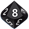
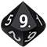
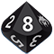
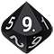

Simulateur de lancer de dés
 



Perte d’énergie
Le dé de perte vous fait perdre 0 énergie(s)
Symbiose nécrotique !
Vous êtes victime d’un malus narratif. Décrivez-le (mise en danger d’un allié, perte de temps significative, évolution négative de l’adversité...). Et ajoutez 1 acte supplémentaire à l’adversité.
Symbiose nécrotique transcendantale !
Vos 4 énergies sont en à 0. L’adversité en cours est augmentée de 2 actes.
Symbiose transcendantale !
Vos 4 énergies sont en symbiose. L’adversité en cours est réduite de 2 actes.
Symbiose !
Vos 3 énergies sont en symbiose. Vous gagnez un Bonus narratif, qui vous permet d’enlever un acte à l’adversité. (S’il n’y avait pas d’autre acte à venir, l’acte en cours est un succès.)
0, le chiffre des limbes !
Vous avez obtenu un 0 à l’un de vos dés. Si c’est votre dé d’action, vous échouez. (il est toujours possible de puiser dans une autre énergie)
Bonus possible !
Vous avez obtenu un 9 à l’un de vos dés. Si c’est votre dé d’action, vous gagnez un Bonus narratif. (il est possible de puiser dans une autre énergie pour changer de dé d’action)
Apprentissage
On apprend de ses réussites et de ses échecs. La symbiose vous permet d’augmenter de +1 le niveau du domaine utilisé pour réaliser cette action. (1 seule fois / joueur / séance)
Succès critique !
Le 0 obtenu sur le dé noir vous offre un bonus de +10 au score, ainsi qu’un bonus narratif !
Relance possible
Si la valeur du dé noir ne vous convient pas, vous pouvez le relancer au prix d’un point d’énergie au choix.
Vous êtes en vacances, et vous n’avez pas vos dés à 10 faces
pour pouvoir jouer ?
Pas de problème, ce simulateur de lancer de dés
est fait pour vous !